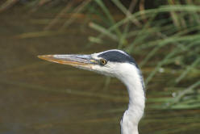

TKT Module 1: Describing language and language skills
Grammar

 |
What is grammar? |
Here's a good definition of grammar:
a description of the structure of a
language and the way in which linguistic units such as words and
phrases are combined to produce sentences in the language.
Richards, Platt and Platt (1992:161)
Sometimes, the term grammar also includes phonology (the study of sounds) but in this course we will put phonology in a separate section. Grammar also includes the way we change words and build words from smaller units (morphemes and morphology) but this, too, will be in a separate section in this course on lexis.
 |
Key concepts in this guideBy the end of this guide, you should be able to understand and use these key concepts:
|
Look out for these words like this
in the text.
There will be tests at the end of the guide for you to check that
you understand the ideas.
|  |
Grammatical form and grammatical function |
- Grammatical form
refers to how a word or phrase is made in English. For example: - The base form of the verb is smoke but, when the
subject is he, she or it, the
form of the verb changes to
smokes.
The noun is child but when we make it plural, we change the form to children.
With an adjective in English such as happy we can change the form and make it a noun: happiness. There is more on how we do that in the guide to lexis.
When we change the grammatical form of a word in English, the change is called an inflexion. For example:
smoke → smokes: this is the third-person, -s inflexion.
printed → printed: the verb is inflected to show the past tense with -ed.
house → houses: this is the plural, -s inflexion.
the man → the man's: this is the possessive, -'s inflexion.
Inflexion is sometimes spelled inflection, by the way. Both are correct. - Grammatical function
refers to what a word is doing in the language. For example: - In I cut my finger yesterday, the word cut
has the grammatical function of a
verb describing an action.
In I have a bad cut on my finger, the word cut has the grammatical function of a noun for a thing.
In The English are strange people, the word English is a noun for the people who live in England.
In Mary is English, the word English is an adjective describing her nationality. It is modifying the noun Mary.
It is easy to see that you do not know what a word is doing when you look at it. You must see or hear it in a context to know what it means and what sort of word it is. Where, socially, or in a text the word is used is referred to as context. The words around the word in a text, written or spoken, is referred to as co-text.
 |
Two different sorts of words |
There are two kinds of words in English.
- Content words
When they are alone, these words still have a meaning. For example:
house, school, beauty, dislike, begin, jump, happy, sad, important, quickly, now, fortunately
When you see or hear these words you can provide a definition and, often, a translation into another language. - Grammar or function words
These words mean nothing when they are alone but they make the grammar of the language work. For example:
in, out, up, the, a, an, this, that, he, she, them, and, when, but
When you see or hear these words you cannot define them or provide a translation until you know what they are doing in the sentence by looking at the co-text.
 |
Stop and check |
It is very important to understand the difference between content
words and function or grammar words.
In this sentences there are 7 function or grammar words and 7
content words. What are they?
Mary came into the room and sat in her
favourite chair by the fire.
Click here when you have an answer.
Function words are in
green, content words are in
red:
Mary came
into the
room
and
sat
in her
favourite chair
by the
fire.
If you got that right, carry on.
Here is what you have just identified:
- The word Mary is a proper noun and a content word.
- The word came is the past tense of a main verb and a content word.
- The word into is a preposition (of movement to a place) and a function word.
- The word the is a determiner (the definite article) and a function word.
- The word room is a common, countable noun and a content word.
- The word and is a coordinating conjunction linking the two clauses together and a function word.
- The word sat is another main verb in the past tense and a content word.
- The word in is another preposition (of place) and a function word.
- The word her is another determiner (a possessive) and a function word.
- The word favourite is an adjective and a content word.
- The word chair is another common countable noun and a content word.
- The word by is another preposition (of place) and a function word.
- The word the is another example of the definite article determiner and a function word.
-
The word fire is, in
this case a common countable noun but is often used as a mass
noun as in, e.g.:
Fire is dangerous.
 |
Content words |
There are 5 types of content words in English.
- NOUNS
Nouns are words for people, places, things and feelings. Here are some examples of the three types:
boxes and boxes - Proper nouns refer to people and places:
George is in London
Russia is huge
The European Union has lots of members - Mass nouns refer things which do not have a plural:
milk is expensive here
sugar is bad for me
the water is very cold
happiness is important
beauty doesn't last long - Count nouns refer to things we can have in the plural
and most nouns are in this group:
I have a pencil and two pens
my house is here
dogs are not usually dangerous
I love trees
my country is beautiful
he's a Scotsman
- Proper nouns refer to people and places:
- VERBS

hit the ball Verbs are words for doing, thinking, speaking and being. Here are some examples of the five types:
- Verbs describing actions, behaviour or feelings.
These are lexical or
main verbs which carry meaning
even if alone:
kick the ball
don't worry
the glass broke
I am watching TV
Begin! - Verbs describing states and thinking These are
also
lexical verbs or
main verbs which carry meaning
even if alone:
I enjoy walking
I hope she is here
she hates pasta
it helps me work
Think! - Linking or copular verbs join nouns to nouns and nouns to
adjectives and show the
connection between things:
I am in London
she became the manager
the car looks wonderful
she got older
there is a house on the corner
The verbs do not mean anything if they do not connect two things so, e.g.:
*She got
*They are
*It became
all mean nothing. - Primary Auxiliary verbs make tenses with other verbs:
I have broken the glass
she is working in Berlin
they got the car repaired
we don't visit museums
Again, the verbs do not mean anything if they do not make a form with another verb so, e.g.:
*She has
*They are
*We got
all mean nothing (unless you have clear co-text so you can fill in the missing information in your head). - Modal auxiliary verbs show how you feel about other verbs.
They do not stand alone but are always with other verbs:
I can come at six
she will go later
they must go
we used to work harder
Again, the verbs do not mean anything if they do not come with a main verb so, e.g.:
*She can
*They will
*It must
all mean nothing (unless you have clear co-text so you can fill in the missing information in your head).
- Verbs describing actions, behaviour or feelings.
These are lexical or
main verbs which carry meaning
even if alone:
- ADJECTIVES

one orange pea Adjectives modify (i.e., change) nouns. They can come before or after the noun they describe. For example:
- It's a huge house with a long garden (adjective before the noun: attributive use)
- The house is tiny and the garden is very small (adjective after the noun, joined with a linking verb: predicative use)
It's a red house
and some tell us what sort of noun it is, for example:
It's a detached house
This is an important difference.
Words which describe the noun are called epithets. Words which classify the noun are called classifiers.
For more on adjectives, see the guide on this site.
- ADVERBS

beautifully painted Adverbs describe (modify) verbs and some modify adjectives and other adverbs. There are five types which answer different questions:
- How? Adverbs of manner: he drove quickly, he walked slowly, he spoke happily
- When? Adverbs of time: I'll arrive soon, She left early, I'm flying tomorrow
- Where? Adverbs of place: sit here, please smoke outside, come in
- How often? Adverbs of frequency: she often works at home, they frequently take a holiday, we sometimes play cards
- How much? Adverbs of degree: I like it a lot, they really enjoy their food, he drove very quickly, she hugely enjoyed the play
She was very happy.
They were slightly interested
Some adverbs also modify other adverbs. For example:
She drove very quickly
He arrived extremely quickly
For more on adverbs, see the guide on this site.
- INTERJECTIONS (sometimes called
exclamations)

Ooops! These are words we use, usually in speech, and informally, to show our feelings: surprise, pain, tiredness, fear etc. Here are some examples:
Wow! What a beautiful house!
Ouch! That hurts.
Oh, I didn't know that.
Yuck! That's horrible.
Here is the big picture:

 |
Grammar or Function words |
These words mean nothing when they are alone. They must be part of a sentence for you to understand them. There are 4 different kinds of function words.
- DETERMINERS

the cat is watching These words change how we see a noun. For example, we can have:
she has one cat
this cat is pretty
my cat is not very clever
some cats are in the garden
the cat wants food
a cat came into the house
which cat is your cat?
and the determiners change how we understand the words cat, garden and house.
Determiners always come in front of the noun and there are five sorts of them:- a, an, the.
These are articles and they tell you if you are talking
about a special noun or not. For example:
a cat came in (this is one cat that I don't know)
the cat came in (this is a cat I know) - this, that, these, those.
These are demonstratives and they tell me where the cat is.
For example:
This cat here
Those cats there
That cat in the garden
Those cats are in the garden - wh-words.
These words make questions:
Which cat?
What cats?
Whose cat?
Who is that? - my, your, his, her, our,
their. These are possessives and show us
who has something. For example:
my cat is in the house
his cat is stupid
their cats are in the garden - some, many, a few, two,
three, ten, a little, lots of, no, several.
These are quantifiers and tell us how much or how many.
For example:
There are four cats in the house
Several cats came in
Many cats are white
No cats are in the garden
- a, an, the.
These are articles and they tell you if you are talking
about a special noun or not. For example:
- PRONOUNS

she looks like her These are small words which stand for things, people or whole ideas. There are three sorts:
- I, me, you, she, he, it, her,
him, we, us, they, them. These are
personal
pronouns because they stand for people. For example:
I want a cat
She wants it
We gave them a cat
Please tell us - something, someone, anything,
anyone, some, any, nothing etc.
These do not stand for a special person or thing. For example:
Do you want something?
I have nothing to eat
Can I give you some?
Is anyone at home?
Notice that adjectives in English always come after these words:
I want something stronger
She offered nothing useful
Have you anything bigger? - this, that, it
etc. can also stand for whole ideas. For example:
He was working in the garden and that is why he didn't hear the telephone
I was trying to follow the instructions to install my printer but it was very difficult.
- I, me, you, she, he, it, her,
him, we, us, they, them. These are
personal
pronouns because they stand for people. For example:
- PREPOSITIONS

it's in the corner of the square These words usually tell us when or where (but they can tell us other things). They join the verb to the noun or pronoun. There are two main sorts:
- Prepositions of place. For example:
He is waiting at the bus stop
She is sitting in my chair
They have lunch in the square
The restaurant is in the corner - Prepositions of time. For example:
He will wait until 6 o'clock
She came on Sunday
They left after the film
The train arrived at the right time
- Prepositions of place. For example:
- CONJUNCTIONS

These words join ideas together. There are three sorts.
- Joining (coordinating) two equal ideas. For
example:
He went to the market and he bought a new hat
I telephoned but nobody answered - Making one idea depend on another (subordinating).
For example:
I came because he asked me
She will come if she has time - Double (correlating
or correlative) conjunctions put two ideas together.
For example:
Both John and Mary came
Whether he comes or not is important
- Joining (coordinating) two equal ideas. For
example:
Here's the big picture:

 |
Tense and aspect |
There are two concepts to be clear about here.
- Tense
-
Tense in languages refers to the time something happens. For example:
I came with him (past time)
I will finish before 6 (future time)
I am smoking too much (present time) - Aspect
-
Aspect refers to how we see an event in relation to other events. For example:
I have been waiting since 6 o'clock
This is the perfect aspect: I am talking about something which started in the past and is still happening now.
She was cycling when the accident happened
This is the progressive aspect followed by the simple aspect: I want to be clear that the cycling was a long event but the accident was short and quick.
If you would like to investigate time, tense and aspect some more, go to the tenses index on this site.
 |
Phrases |
- Phrases
- We have seen that, for example, a noun or a verb can be a
single word with a single grammatical function as in, for
example:
He (pronoun) went (verb) home (noun)
Mrs Smith (noun) cooked (verb) that (determiner) wonderful (adjective) dinner (noun)
But very often the grammatical function is filled not by a single word but by a phrase of more than one word. Look at this sentence:
The old man almost certainly had lived through very interesting times
Can you decide which groups of words are doing the same job as single words? Click here when you have your answer. -


Noun phrase Adverb phrase Verb phrase Prepositional phrase 

Preposition Adjective phrase Noun phrase The old man almost certainly had lived through very interesting times
Notice that we talk about a phrase even if it is only one word. That's the correct way to analyse the grammar.
The most important word in the phrase is called the head. The heads of the phrases above are: man, certainly, live, through, interesting, times.
This is a course in Teaching Knowledge so we cannot cover all the grammar here. There are lots of guides on this site which you can follow to learn more about the grammar of English. A good place to start is the initial plus section.
 |
Self-test questions |
Before you go on, make sure you can answer these questions. If you can't, go back to the sections which give you trouble.
- Give an example of inflexion on a verb and on a noun.
- What is the difference between words like
table, house, happiness, decide and extremely
and words like
and, of, for, by, the, an and because? - Give one example of the following:
- a proper noun
- a copular verb
- an adverb of manner
- the attributive use of an adjective
- a quantifying determiner
- a preposition of time
- a personal pronoun
- a coordinating conjunction
- Explain the difference between tense and aspect.
If you are happy with your progress, go on.
 |
Tests and practice for TKT |
| Test 1 | A simple matching task of 7 items |
| Test 2 | A 15-item, multiple-choice test |
Return to the Module 1 index:

or go on to the next
guide which is to lexis.
Reference:
Richards, J. C, Platt, J & Platt, H, 1992, The Longman
Dictionary of Language Teaching and Applied Linguistics,
Harlow: Longman